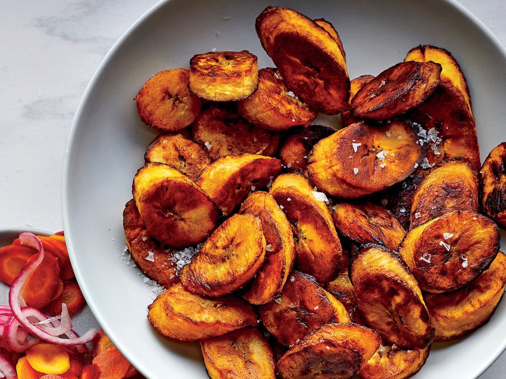

<!DOCTYPE html>
<html lang="en">
<head>
    <meta charset="UTF-8">
    <meta http-equiv="X-UA-Compatible" content="IE=edge">
    <meta name="viewport" content="width=device-width, initial-scale=1.0">
    <title>Plantain</title>
</head>
<body>
    
</body>
</html><h1>Baked Plantain</h1>



<p>These juicy baked plantains are a delight, they are sweet, melt in your mouth and healthy. Baked in the oven compared to traditional frying, this is comfort food at its best, served as a side, dessert or snack.
</p>

<div> 
    <h3> Ingriedients</h3>
    <ul>
        <li>Medium ripe plantain </li>
        <li>olive oil</li>
        <li>cinnamon (optional) </li>
    </ul>
</div>

<div> 
    <h4> Instructions</h4>
    <ol>
        <li>Preheat oven 425 degrees F. Lightly spray parchment lined cookie sheet and set aside.</li>
        <li> Using a knife remove the peel of the plantain by cutting off the ends then cut through the skin lengthwise. Remove the skin and slice diagonally into 1/2 inch slices.</li>
        <li> Using a knife remove the peel of the plantain by cutting off the ends then cut through the skin lengthwise. Remove the skin and slice diagonally into 1/2 inch slices.
        <li>Place slices in a single layer on a cookie sheet, spray the top of plantains with cooking spray and bake for 20 minutes, turning halfway or until plantains are golden brown. </li>
    </ol>
</div>

<div>
    <p> <a href="plantain.html"> Return to the top</a> </p>
</div>

<div> 
    <p> <a href="index.html"> Homepage</a></p>
</div>